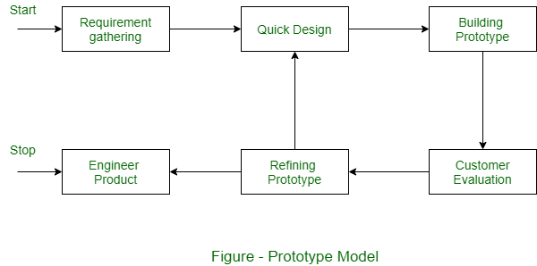

Prototüüpimine

Prototüüpimine on oluline samm tarkvaraarenduse protsessis, mis võimaldab teil testida ja valideerida oma ideid kasutajatega enne aja ja ressursside investeerimist koodi kirjutamisse. Prototüüpe luues vähendate projekti riski ja tagate, et ehitate õige toote koos omadustega, mis vastavad tegelike kasutajate vajadustele.
Olemas on erinevaid tarkvara prototüüpimise meetodeid, mis on saadaval ja mis teenivad konkreetseid eesmärke:
1. **Käsitsi joonistused / Paberi kavandid**: Isegi lihtsad visandid paberil aitavad tuua häguseid ideid ellu ja selgitavad välja olulised otsused rakenduse kujunduse ja funktsionaalsuse kohta. Need joonistused ei ole mõeldud lihvitud kujundusteks, vaid pigem teenivad alustamispunkti aruteluks ja ideede genereerimiseks.
2. **Traadiraamistikud / Madala usaldusväärsusega disain**: Traadiraamistikud on tarkvararakenduse skeletilised joonised, mis esindavad toote algset kontseptsiooni. Need keskenduvad funktsionaalsusele ja kasutajavoole, minimaalse stiili ja graafiliste elementidega. Traadiraamistikud on suurepärased suhtlusvahendid tagasiside kogumiseks osalistelt ja kasutajatelt disainiprotsessi käigus.
3. **Klikitavad prototüübid**: Klikitavad prototüübid on interaktiivsed komplektid seotud visuaalsetest ekraanidest, mis jäljendavad töötava rakenduse toimimist. Kasutajad saavad prototüübiga interakteeruda arvutis või mobiilseadmes, klõpsates nuppudel ja liikudes ekraanide vahel nagu tegeliku tarkvararakenduse kasutamine. Klikitavad prototüübid pakuvad selget ettekujutust lõpp-toote välimusest ja tundest, võimaldades lihtsat iteratsiooni ja muudatusi kasutajate tagasiside põhjal.
Eelised:
- See mudel on paindlik disainis.
- Vigade avastamine on lihtne.
- Puuduvat funktsionaalsust on lihtne leida.
- On olemas täiustamise võimalus, mis tähendab, et uusi nõudeid saab hõlpsalt mahutada.
- Arendaja saab seda tulevikus keerukamateks projektideks kergesti uuesti kasutada.
- See tagab suurema kliendirahulolu ja mugavuse taseme.
- See on ideaalne veebisüsteemide jaoks.
- See aitab nii arendajatel kui ka kasutajatel süsteemi paremini mõista.
- Integratsiooninõuded on väga hästi mõistetavad ja rakenduskanalid otsustatakse väga varajases staadiumis.
- See võib kaasata kasutajaid aktiivselt arendusfaasi.
Puudused:
- See mudel on kallis.
- Dokumentatsioon on halb pidevalt muutuvate kliendinõuete tõttu.
- Nõuete osas võib olla liiga palju varieeruvust.
- Mõnikord nõuavad kliendid tegeliku toote kohaletoimetamist kohe pärast varase prototüübi nägemist.
- Arendajad võivad kiirustades prototüüpe ehitades pakkuda alamoptimaalseid lahendusi.
- Kliendid võivad pärast algse prototüübi nägemist olla rahulolematud või mitte huvitatud tootest.
- Iteratsioonide arvu kindlaksmääramisel on kindlus.
- Võib esineda mittetäielikku või ebapiisavat probleemianalüüsi.
- Süsteemi keerukus võib suureneda.